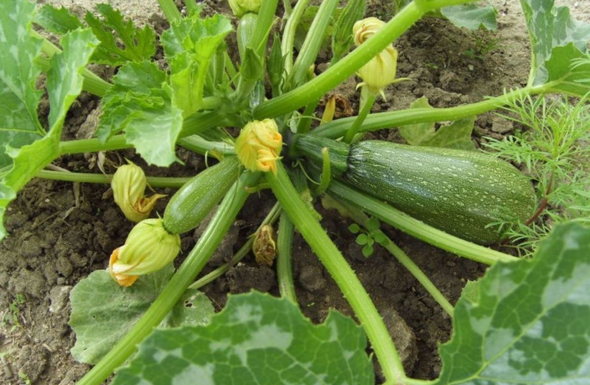
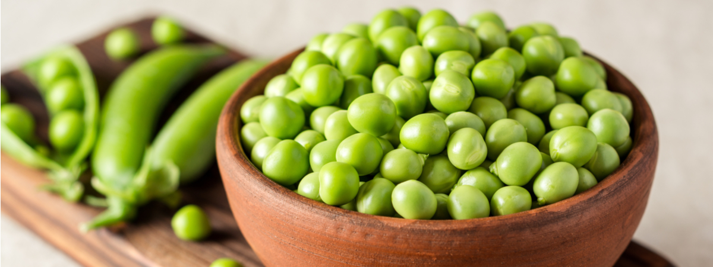

Produzione 2019
Zucchine

coltivare il terreno molto ricco di materia organica e non coltivare dopo solanacee
Varietà:
zucchina di faenza
Periodo di semina:
marzo/aprile
Primo raccolto:
fine aprile
ultimo raccolto:
Fine luglio
Raccolto
Dimensione
Quantità
Piccole
16
medie
26
Grandi
9
51
Aquistali!
Piselli

American Wonder
varietà media precoce come ciclo culturale
Consigli
Piante in semenzaio riscaldato
E importante:
Aquistare vasetti bio
mantenere arcato il semenzaio
non usare il coperchio del semenzaio
non mettere il semenzaio vicino al termosifone
Fissare i sostegni correttamente
acquistare una rete antigrandine
Aquistali!